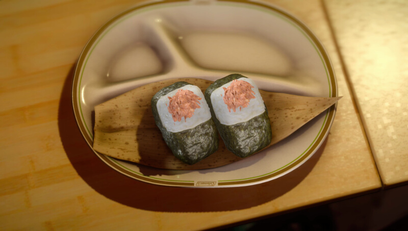

Active cooking time: 15-30 mins | Total cooking time: 45-60 mins | Serves 3-4

This salmon is totally ready to rock that sales presentation!
Ingredients
1 small salmon fillet, about 6oz (170g)
2 tsp soy sauce
1 tsp Japanese rice wine or white wine
2tsp honey
2tsp miso paste
1⁄2 cup uncooked sushi rice (100g)
3-4 pieces of approx. 2 x 10 in (5cm x 25cm) nori
How to
Mix soy sauce, wine, honey, and miso paste together in a ziplock
bag. Add salmon and marinate for 30 minutes.
Meanwhile, wash the rice in a strainer. If using a pot to cook the
rice, first soak rice in water for 15-20 minutes. Cook rice in a rice
cooker, or in a pot, using your favorite method of cooking. Set aside
and let cool whenever it finishes cooking.
Preheat oven to 400°F (204°C). Place salmon, skin side down, on a
foil-lined pan and bake until the salmon is just cooked through,
about 10-12 minutes (test for doneness with fork).
Remove salmon from oven. Break the salmon apart in a bowl into
little pieces with a fork.
Prepare a bowl of cold water. To keep the rice from sticking to your
hands when forming the rice balls, periodically keep your hands wet
using this water.
Take a large handful of the cooked rice with your hands. Flatten the
rice until it is about half an inch thick (1.5cm), and add a bit of
salmon filling to the center. Fold the rice in half so the filling is
hidden.
Gently mould the rice into a soft triangular shape with your palms.
Leave a small indent on the top corner of the triangle.
Wrap the center of the piece of nori around the back of the triangle,
then fold the edges towards the front and tuck under the triangle to
create a “suit” shape. Set triangle on plate and add a ball of salmon
filling to the top of the triangle. Repeat for remaining filling/rice -
this should yield 3-4 suits. Enjoy!